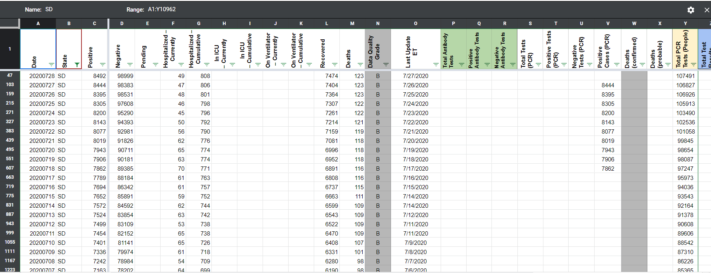

[SD] Unclearly defined case count included in confirmed cases
State or US: South Dakota
Describe the problem Unclearly defined case count included in confirmed cases. SD has unclear case definitions.
Link to data source https://doh.sd.gov/news/Coronavirus.aspx
brianskli added the label Data quality on July 14, 2020 at 7:19 am
brianskli closed the issue on July 14, 2020 at 7:25 am
the-daniel-lin commented on July 29, 2020 at 6:36 am
On 7/17, we began incorrectly reporting the unclearly defined case count in the confirmed cases column: 
Slack Thread: https://covid-tracking.slack.com/archives/C012C4BEAR4/p1595946823327700
the-daniel-lin reopened this on July 29, 2020 at 6:36 am
the-daniel-lin commented on July 29, 2020 at 6:38 am
We have a new issue for this: https://github.com/COVID19Tracking/issues/issues/687
the-daniel-lin closed the issue on July 29, 2020 at 6:38 am
Steps taken to address issue: